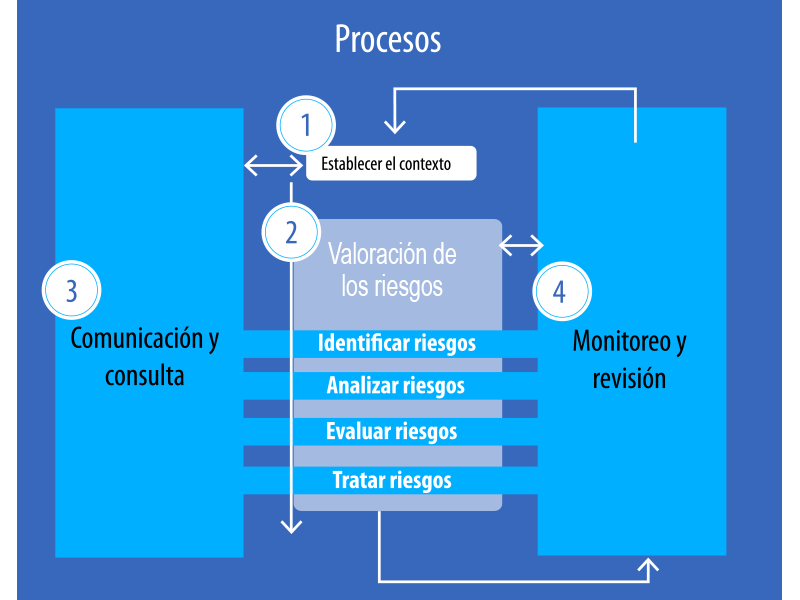
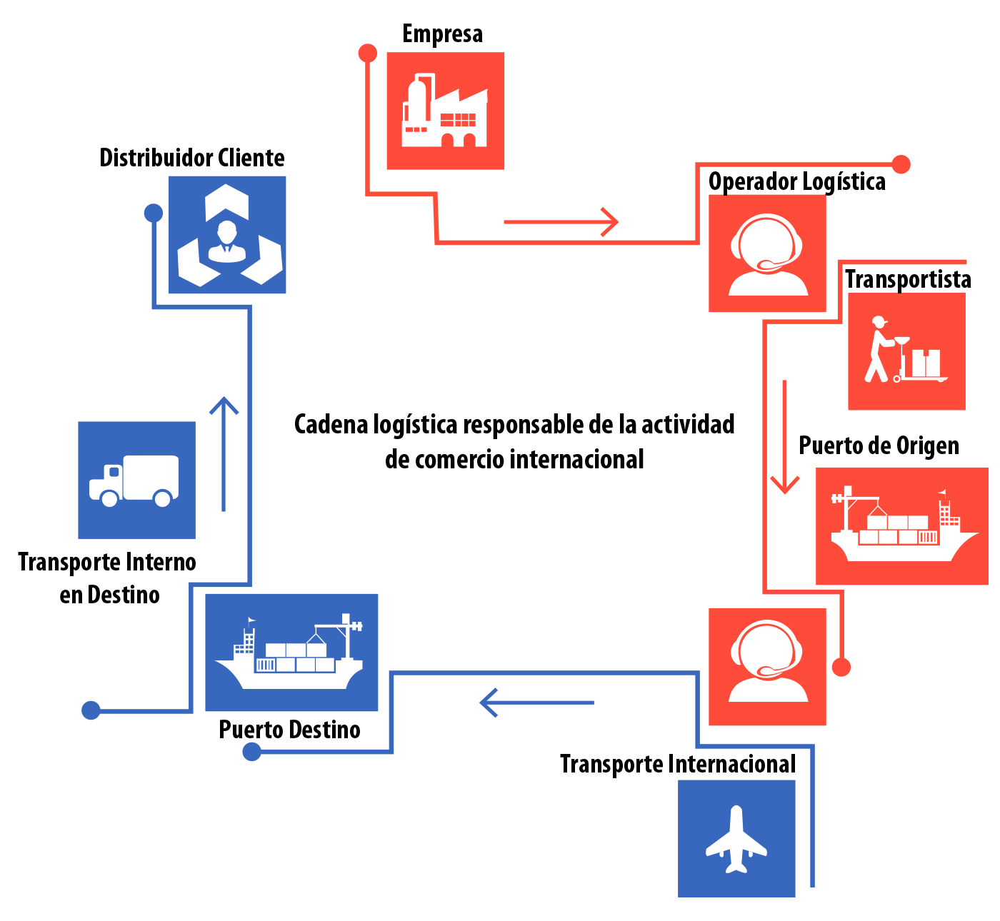
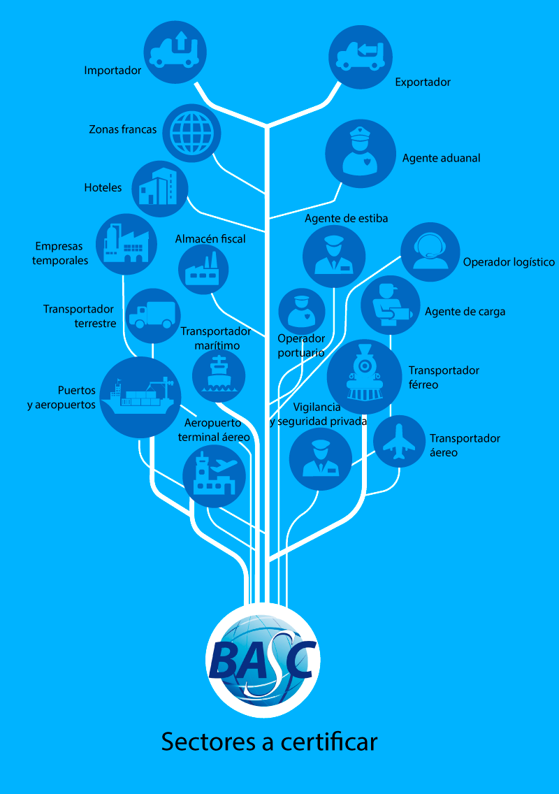

PROCESO DE GESTIÓN DEL RIESGO EN LA CADENA DE SUMINISTRO
Recordemos que para una adecuada gestión del riesgo las organizaciones deben tener un procedimiento documentado que permita la determinación del contexto, la identificación, el análisis, la evaluación y el tratamiento de los riesgos; así como su comunicación y consulta, monitoreo y revisión.
Igualmente, debe realizar una reevaluación de los riesgos, mínimo una vez al año y/o cuando se identifiquen nuevas amenazas o vulnerabilidades en el sistema de gestión.
A continuación, vamos a avanzar a través del proceso de Gestión del Riesgo en la Cadena de Suministro, para conocer y aplicar las herramientas disponibles en cada una de sus etapas.
Proceso de Gestión del Riesgo (ISO 31000:2009)
1. Establecimiento del contexto
El establecimiento del contexto en el proceso de Gestión del Riesgo, busca articular los objetivos de la organización con la gestión del riesgo, definiendo los parámetros internos y externos a considerar en la gestión, así como el alcance y los criterios del riesgo para el resto del proceso.

Recuerde que...
En el contexto externo se debe considerar:
- Partes interesadas/involucradas externas.
- Requisitos legales y reglamentarios.
- Ambiente social, cultural y político.
- Ambiente financiero, económico, natural y competitivo.
- Contexto internacional, nacional, regional y local.
- Factores tecnológicos.
- Impulsores clave o detonantes de los riesgos en las actividades de la empresa.
- Tendencias que tienen impacto en los objetivos de la organización.
- Relaciones con las partes involucradas externas, sus percepciones y valores.
En el contexto interno se debe considerar:
- El gobierno, estructura de la organización, funciones y responsabilidades.
- Cultura de la organización y sus procesos.
- Políticas, objetivos y estrategias implementadas para lograrlos.
- Factores productivos.
- Relaciones con las partes involucradas internas, sus percepciones y valores.
- Sistemas de información, flujos de información y procesos de toma de decisiones formales e informales.
- Normas, directrices y modelos adoptados por la organización.
- Forma y extensión de las relaciones contractuales.
Por ejemplo, si al realizar un análisis del contexto externo externo se encuentran ciertas exigencias legales importantes a nivel ambiental, o que hay fuertes presiones de un grupo de clientes para el cumplimiento de algunos requisitos, es lógico que los objetivos de la gestión del riesgo deban reorientarse hacia estos parámetros. En decir, la gestión del riesgo deberá considerar en su alcance los riesgos ambientales y los riesgos de clientes.
Por otro lado, en el contexto interno, una organización grande, con muchos trabajadores y una estructura orgánica extensa y con muchos recursos, definirá su proceso de gestión del riesgo de un modo diferente a una organización pequeña, de pocos trabajadores y sin recursos especializados. En cualquiera de los casos, el proceso de gestión del riesgo debe dimensionarse de manera que sea viable y acorde con las características internas. Así mismo, no es igual una empresa que tenga sistemas de gestión normalizados y una cultura preventiva establecida que le permita evaluar riesgos en ámbitos específicos (aspectos ambientales, riesgos laborales, etc.), que una empresa que no cuente con esta cultura.
Establecimiento del contexto en la Gestión del Riesgo de la Cadena de suministro
Cadena Logística Responsable de la actividad de Comercio Internacional.
Para el proceso de gestión del riesgo en la cadena de suministro del comercio internacional, se debe considerar en primera instancia, desde qué actor se realizará el establecimiento del contexto.
Para BASC, los actores directos e indirectos involucrados en una cadena de suministro exportación/importación, se pueden clasificar en los siguientes sectores elegibles:
Sectores elegibles: actores de la Cadena Logística de Comercio Internacional.
A partir de la identificación del sector o actor, se puede establecer el contexto interno y externo, apoyándose en herramientas de análisis como: entrevistas con expertos de cada área, reuniones con directivos y personas de todos los niveles, lluvias de ideas con los integrantes de las áreas y de los equipos de gestión, diagramas de flujo, herramientas de estudio causa-efecto y análisis por escenarios, entre otros.
También es importante en esta etapa del proceso de Gestión del Riesgo, tener en cuenta los factores de riesgo y los riesgos identificados a través de los sistemas SARLAFT y SARO de la compañía o actor de la cadena.